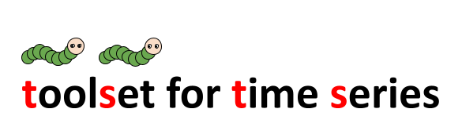

Tutorials
Config
Training
Inference
GPU Training
Modules
tsts.collators
tsts.losses
tsts.metrics
tsts.models
tsts.optimizers
tsts.schedulers
tsts
Docs
»
Index
Index
_
|
A
|
B
|
C
|
D
|
F
|
I
|
M
|
N
|
R
|
S
_
__init__() (tsts.collators.build_collator method)
(tsts.collators.Collator method)
A
Adam (class in tsts.optimizers)
B
build_collator (class in tsts.collators)
build_losses (class in tsts.losses)
build_metrics (class in tsts.metrics)
build_model (class in tsts.models)
build_optimizer (class in tsts.optimizers)
build_scheduler (class in tsts.schedulers)
C
Collator (class in tsts.collators)
CosineAnnealing (class in tsts.schedulers)
D
DILATE (class in tsts.losses)
F
forward() (tsts.losses.DILATE method)
(tsts.losses.MAPE method)
(tsts.losses.MSE method)
(tsts.metrics.MAE method)
(tsts.metrics.MAPE method)
(tsts.metrics.MSE method)
(tsts.metrics.RMSE method)
(tsts.models.Informer method)
(tsts.models.NBeats method)
(tsts.models.Seq2Seq method)
from_cfg() (tsts.collators.Collator class method)
I
IdentityScheduler (class in tsts.schedulers)
Informer (class in tsts.models)
M
MAE (class in tsts.metrics)
MAPE (class in tsts.losses)
(class in tsts.metrics)
MSE (class in tsts.losses)
(class in tsts.metrics)
N
NBeats (class in tsts.models)
R
RMSE (class in tsts.metrics)
S
Seq2Seq (class in tsts.models)
SGD (class in tsts.optimizers)
StepScheduler (class in tsts.schedulers)